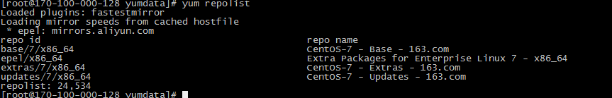

1. 本地YUM源搭建
Linux系统的包管理是yum。默认刚安装好的系统一般都是从CentOS官方下载相关软件包，这样就会浪费很多带宽。
1.1. 服务端配置
# 安装yum-utils
yum install yum-utils createrepo nginx -y
# 准备存储YUM源数据的文件夹
mkdir -p /data/yumdata
同步脚本下载
yum repolist

# 执行脚本，同步yum源以及生成yum源数据
cd /data/yumdata
chmod +x syncRepo.sh
sh syncRepos.h
# 修改NGINX配置文件,将同步至本地的YUM通过HTTP给内部使用
vi /etc/nginx/nginx.conf
...
location / {
autoindex on;
root /data/yumdata/;
}
# 开启NGINX
systemctl enable nginx && systemctl start nginx
# 加入定时任务，每天自动同上层yu
vim /etc/crontab
2 3 * * * root /data/yumdata/syncRepo.sh
1.2. 客户端配置
先备份系统原有的repo文件
cd /etc/yum.repos.d && mkdir backup mv *.repo backup在/etc/yum.repos.d/目录下新建本地YUM源的文件
vim /etc/yum.repos.d/local.repo [centos-base] name=CentOS-Base baseurl=http://128.0.100.170/base/ enable=1 gpgcheck=0 [centos-update] name=CentOS-Update baseurl=http://128.0.100.170/updates/ enable=1 gpgcheck=0 [centos-extrals] name=CentOS-Extrals baseurl=http://128.0.100.170/extras/ enable=1 gpgcheck=0 [centos-epel] name=CentOS-EPEL baseurl=http://128.0.100.170/epel/ enable=1 gpgcheck=0 [docker-ce] name=Docker-CE baseurl=http://128.0.100.170/docker-ce/ enable=1 gpgcheck=0